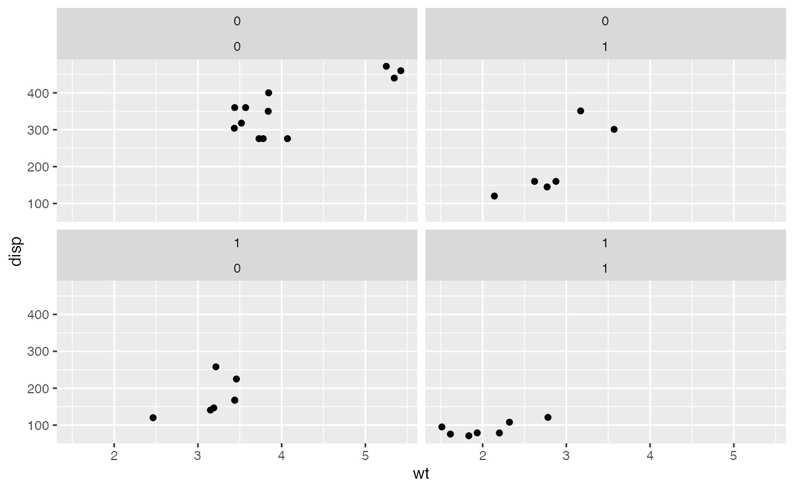
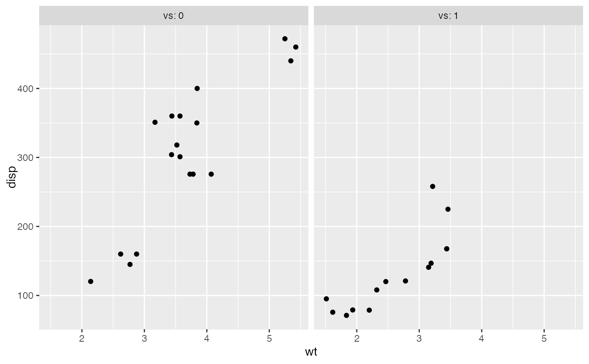
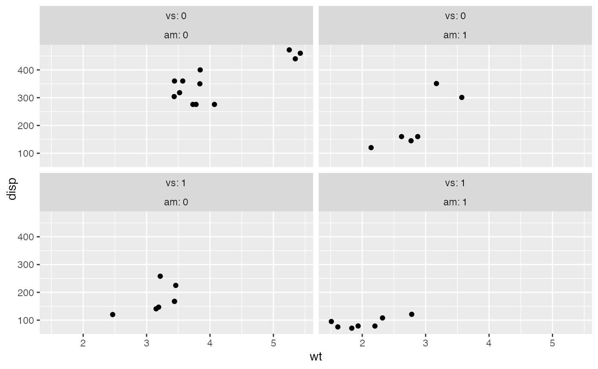
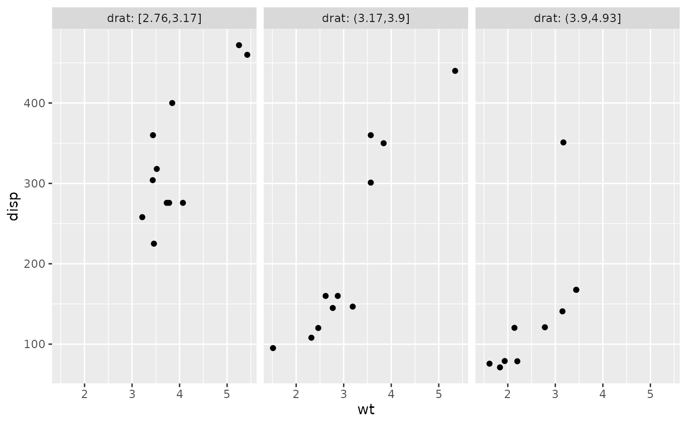
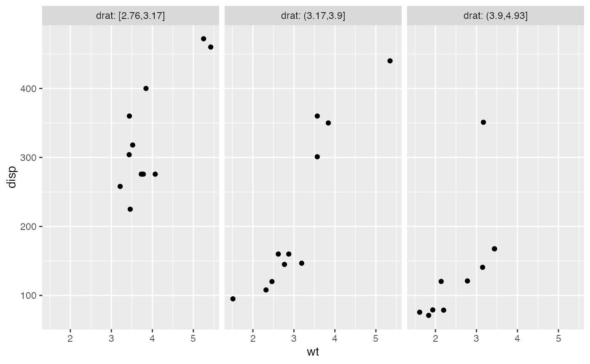

Just like aes(), vars() is a quoting function
that takes inputs to be evaluated in the context of a dataset.
These inputs can be:
variable names
complex expressions
In both cases, the results (the vectors that the variable represents or the results of the expressions) are used to form faceting groups.
vars(...)
| ... | Variables or expressions automatically quoted. These are evaluated in the context of the data to form faceting groups. Can be named (the names are passed to a labeller). |
|---|
# vars() makes it easy to pass variables from wrapper functions: wrap_by <- function(...) { facet_wrap(vars(...), labeller = label_both) } p + wrap_by(vs)p + wrap_by(vs, am)# You can also supply expressions to vars(). In this case it's often a # good idea to supply a name as well: p + wrap_by(drat = cut_number(drat, 3))# Let's create another function for cutting and wrapping a # variable. This time it will take a named argument instead of dots, # so we'll have to use the "enquote and unquote" pattern: wrap_cut <- function(var, n = 3) { # Let's enquote the named argument `var` to make it auto-quoting: var <- enquo(var) # `quo_name()` will create a nice default name: nm <- quo_name(var) # Now let's unquote everything at the right place. Note that we also # unquote `n` just in case the data frame has a column named # `n`. The latter would have precedence over our local variable # because the data is always masking the environment. wrap_by(!!nm := cut_number(!!var, !!n)) } # Thanks to tidy eval idioms we now have another useful wrapper: p + wrap_cut(drat)